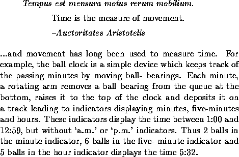
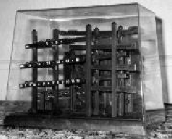

| Tempus et mobilius. Time and motion |
|  |  |
Unfortunately, most commercially available ball clocks do not incorporate a date indication, although this would be simple to do with the addition of further carry and indicator tracks. However, all is not lost! As the balls migrate through the mechanism of the clock, they change their relative ordering in a predictable way. Careful study of these orderings will therefore yield the time elapsed since the clock had some specific ordering. The length of time which can be measured is limited because the orderings of the balls eventually begin to repeat. Your program must compute the time before repetition, which varies according to the total number of balls present.
Every minute, the least recently used ball is removed from the queue of balls at the bottom of the clock, elevated, then deposited on the minute indicator track, which is able to hold four balls. When a fifth ball rolls on to the minute indicator track, its weight causes the track to tilt. The four balls already on the track run back down to join the queue of balls waiting at the bottom in reverse order of their original addition to the minutes track. The fifth ball, which caused the tilt, rolls on down to the five-minute indicator track. This track holds eleven balls. The twelfth ball carried over from the minutes causes the five-minute track to tilt, returning the eleven balls to the queue, again in reverse order of their addition. The twelfth ball rolls down to the hour indicator. The hour indicator also holds eleven balls, but has one extra fixed ball which is always present so that counting the balls in the hour indicator will yield an hour in the range one to twelve. The twelfth ball carried over from the five-minute indicator causes the hour indicator to tilt, returning the eleven free balls to the queue, in reverse order, before the twelfth ball itself also returns to the queue.
The input defines a succession of ball clocks. Each clock operates as described above. The clocks differ only in the number of balls present in the queue at one o'clock when all the clocks start. This number is given for each clock, one per line and does not include the fixed ball on the hours indicator. Valid numbers are in the range 27 to 7000. A zero signifies the end of input.
For each clock described in the input, your program should report the number of balls given in the input and the number of days (24-hour periods) which elapse before the clock returns to its initial ordering. Output will always fit in a 64-bit integer.
30 45 0
30 balls cycle after 15 days. 45 balls cycle after 378 days.